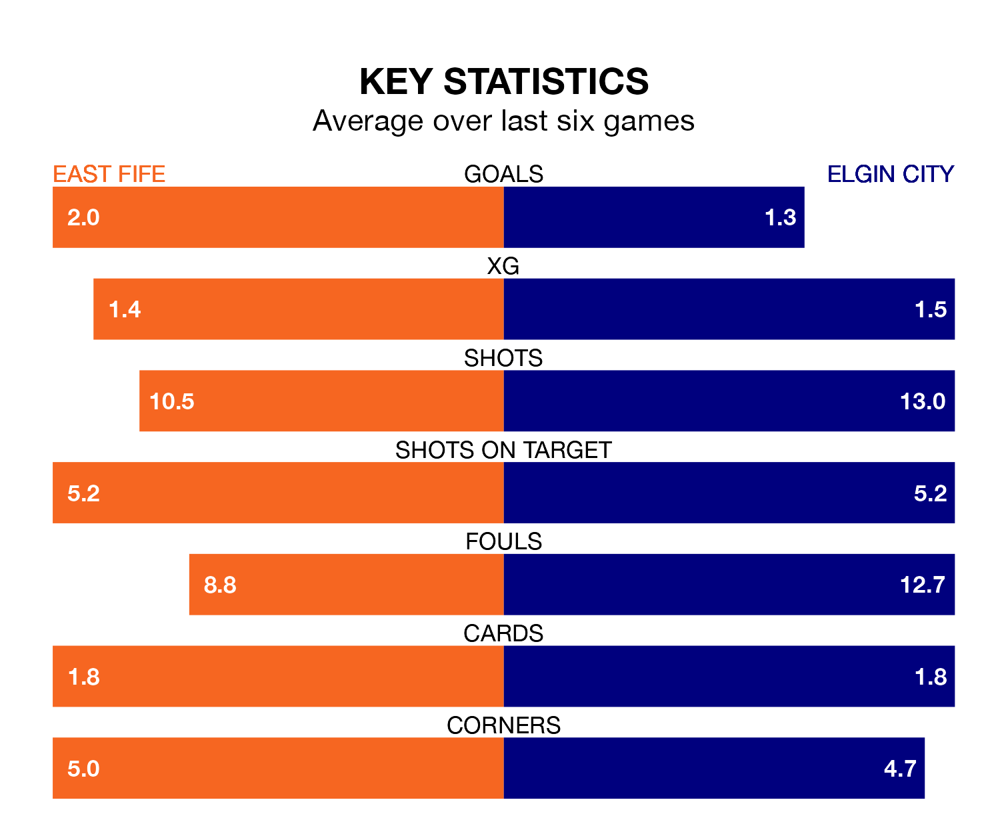

East Fife face Elgin City on Saturday seeking to protect their long unbeaten run in League Two.
The Fifers are unbeaten in seven, with four wins and three draws, ahead of the 3pm kick-off.
They face an Elgin team who have won three and drawn three over the same number of games.
In the last 10 years, East Fife and Elgin have played each other on 18 occasions. East Fife won 11 of them, Elgin five, and they drew twice.
On average, the Fifers scored 2.1 goals and the Black & Whites 1.4 in those matches.
Their last meeting was on February 3, when Elgin won 1-0 at home.
In Nathan Austin, East Fife have one of the league's most on-form strikers so far this season. He has notched 13 goals in 28 appearances, to sit third in the scoring charts.
His goal rate of one every 172 minutes is much quicker than that of Russell Dingwall, Elgin's top scorer with a goal every 433 minutes, and a total of five goals in 25 games.
With 29 goals in 30 games so far this season, City are the league's lowest scorers with 1.0 goals per game. And they are conceding more than average, letting in 48 goals at a rate of 1.6 per game.
The Fifers, meanwhile, are above average scorers, with 1.4 goals per game, compared to a league average of 1.3. They have conceded 1.3 goals per game.
The Black & Whites are seventh in the table after 30 games, of which they have won 10 and drawn six, earning 36 points.
The hosts are two places ahead of the away side in fifth, with 10 wins and 10 draws putting them on 40 points.
East Fife's last match was on March 23, a 2-1 win against Stranraer, with Jack Healy and James Lyon getting the goals for the Fifers.
Elgin drew 1-1 with Forfar Athletic last time out, also on March 23, with Lyall-Robert Booth on the scoresheet.
Updated: 12:39 (UTC), 26/03/24